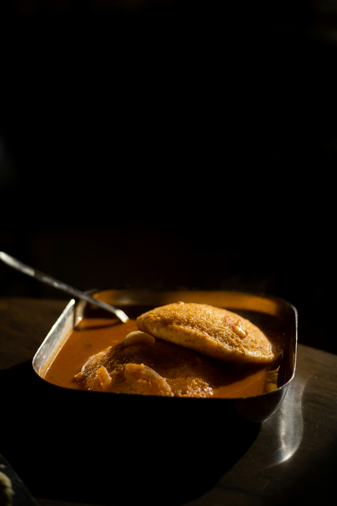

Idly
 Idly
Description
Idly is a South Indian rice cake made from fermented black lentils and rice batter. It is usually served with sambar and chutney for breakfast.
Ingredients
- 1/2 cup urad dal
- 1 cup idli rice
- 1/2 teaspoon salt
- 2 cup water
Steps
- Wash and soak urad dal and rice separately for atleast 6 hours.
- Drain water and rinse dal.Add it to wet grinder. Blend till smooth. Add salt to taste.
- Now repeat for rice and blend it till coarse.
- Mix both batter with clean hands. Add water if needed.
- Ferment for 8 to 14 hours.
- Boil water in the idly steamer. Coat oil on idly plates and add fermented batter.
- Add plates to steamer and cook for 12 to 15 mins. Let the idly cool then remove them with spoon.